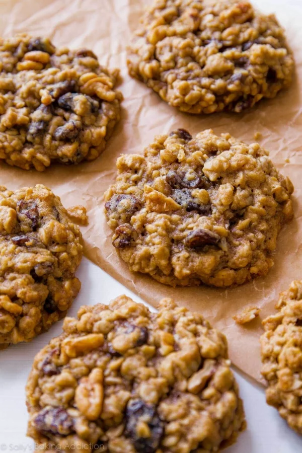

Oatmeal Raisin Cookie

Description
There are two types of people in this world. Raisin haters and
raisin lovers. I fall into the latter category. Besides homemade
apple pie, oatmeal raisin cookies are my favorite dessert. There’s
something incredibly magical about the chewy texture, soft centers,
plump raisins, and cinnamon flavor. Please tell me I’m not the only
raisin lover!!
This is a recipe that will give you some delicious oatmeal raisin
cookies for you to enjoy on a nice day off! Do enjoy!
Ingredients
- Butter
- Brown Sugar & Granulated Sugar
- Eggs
- Pure Vanilla Extract
- Salt
- Cinnamon
- Baking Soda
- Molasses
- Flour
- Oats
- Raisins
Steps
- Mix the butter and the sugars until smooth.
- Add the eggs, vanilla, molasses, and eggs. Then mix until incorporated.
- Add the rest of the dry ingredients (Flour, baking soda, cinnamon, and salt)
- Add the oats and raisins into the mixture and mix.
- Beat in the oats and raisins.
- Chill the cookie dough for 30-60 minutes.
- Roll the cookie dough into 1 inch balls.
- Bake the cookies at 350 degrees fahrenheit for 12-13 minutes until lightly browned.